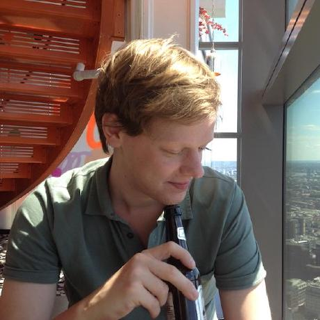

Johannes Korbmacher
Assistant professor in philosophy, Utrecht University
j.korbmache@uu.nl
I’m a mathematical philosopher who mainly works at the intersection of logic, metaphysics, and epistemology. I also ❤ the (philosophy of) mathematics.
I’m currently an Assistant Professor in Theoretical Philosophy (tenured) at Utrecht University. Before that, I did my PhD at the Munich Center for Mathematical Philosophy (MCMP).
Teaching
[At university], the teacher does not exist for the sake of the student; both teacher and student have their justification in the common pursuit of knowledge. -Wilhem von Humboldt
I’m currently coordinator of the following two courses at UU:
Research
I’m interested in most areas of philosophy, but my current research focuses mainly on hyperintensionality in logic and metaphysics. mathematical structuralism.
Here are my recent publications:
- Chiara Lisciandra and Johannes Korbmacher Multiple Models, One Explanation In: Journal of Economic Metholody 28: 186-206 . 10.1080/1350178X.2021.1892800
- Jesse Alama and Johannes Korbmacher The Lambda Calculus In: The Stanford Encyclopedia of Philosophy, edited by Edward N. Zalta . Metaphysics Research Lab, Stanford University. . https://plato.stanford.edu/archives/sum2021/entries/lambda-calculus/
- Albert Anglberger and Johannes Korbmacher Truthmakers and Normative Conflicts In: Studia Logica 108: 49-83 . 10.1007/s11225-019-09862-5
- Johannes Korbmacher and Georg Schiemer What Are Structural Properties? In: Philosophia Mathematica 28: 295-323 . 10.1093/philmat/nkx011
- Johannes Korbmacher Axiomatic Theories of Partial Ground I: The Base Theory In: Journal of Philosophical Logic 47: 161-191 . 10.1007/s10992-016-9423-9
- Johannes Korbmacher Axiomatic Theories of Partial Ground II: Partial Ground and Hierarchies of Typed Truth In: Journal of Philosophical Logic 47: 193-226 . 10.1007/s10992-017-9444-z
- Federico LG Anglberger and Johannes Korbmacher An Exact Truthmaker Semantics for Permission and Obligation In: Deontic Logic and Normative Systems. 13th International Conference, DEON 2016, Bayeruth, Germany, July 18-21, 2016, edited by Olivier Roy , Allard Tamminga , and Malte Willer , 16-31. College Publications. . http://www.collegepublications.co.uk/downloads/DEON00001.pdf
- Johannes Korbmacher Yet Another Puzzle of Ground In: Kriterion – Journal of Philosophy 29(2): 1-10 . http://www.kriterion-journal-of-philosophy.org/kriterion/issues/Permanent/Kriterion-korbmacher-01.pdf
- Johannes Korbmacher , Martin Pleitz , and Julia Schmidt Dynamisierte Feldtheorie In: Freie Subjekte in Der Welt Der Physik. Die Analytische Transzendentalphilosophie Von Peter Rohs in Der Diskussion, edited by ̧ Attila Karaku , Pleitz , and Christian Weidemann , 133-56. Mentis: Münster. .
- Johannes Korbmacher , Markus Pohlmann , Sebastian Schmoranzer , and Ansgar Seide Searle on External Realism In: John R. Searle. Thinking About the Real World, edited by Dirk Franken , ̧ Attila Karaku , and Jan G. Michel , 133-42. Ontos: Frankfurt, a.M.. .
- Johannes Korbmacher , Sebastian Schmoranzer , and Ansgar Seide Simply False? Swinburne on Simplicity as Evidence of Truth In: Richard Swinburne. Christian Philosophy in a Modern World, edited by Nicola Mößner , Sebastian Schmoranzer , and Christian Weidemann , 47-60. Ontos: Frankfurt, a.M.. .
And here are some working papers: